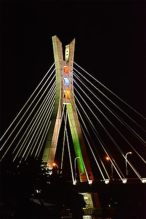

My favorite city is Lekki. Lekki is located in the Island of Lagos state Nigeria, West Africa. It sits in the heart of Lagos social and economy strength, making up over 60% of Lagos's wealthy class. Sometimes referred to as "Small London"
